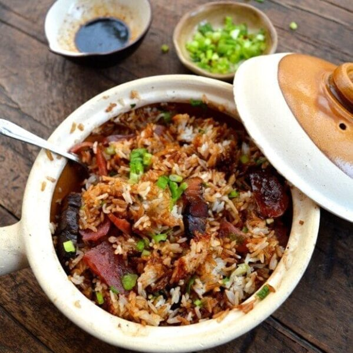

Claypot Chicken Brown Rice

Description
Smoky claypot flavour - checked. Signature crispy rice crust - checked. Bonus: Healthy brown rice with nutty flavour and chewy flavour and chewy texture - checked
Ingredients
- 500g chicken thighs (or half chicken)
- 1 1/2 tbsp cooking oil
- 30g dried salted fish
- 1 cup brown rice
- 2 cup water
- 6 Chinese dried mushrooms
- 1 lup cheong (Chinese sausages)
- 2 tbsp sesame oil
- 2 bunches baby bok choy
- Marinade (A)
- 1 tsp dark soy sauce
- 1 tbsp oyster sauce
- 2 tsp ginger juice (grate some ginger, gather the pulp and squeeze the juice)
Steps
- Marinade chicken pieces with Marinade (A) for at least 15 minutes.
- Heat oil in the clay pot. Add salted fish bits and fry until golden brown. Turn off the stove and take out salted fish, leaving behind the oil in the claypot.
- Add washed rice to the clay pot, coating the rice grains with the oil left in the clay pot using a spatula.
- Add 2 cup water (you may use some of the mushroom soaking water). Cover claypot with lid. Simmer the rice until it is almost cooked, about 10-15 minutes.
- Add the marinated chicken pieces without the leftover marinating sauce (otherwise, the rice may get too soggy) on top of the rice. Scatter fried salted fish bits, mushrooms and lup cheong over. Drizzle sesame oil along the walls of the clay pot so that the rice can form a nice crust later.
- Cover the clay pot and simmer for another 15 minutes. The rice should be cooked by now. If you want a more distinctive crust, you can simmer slightly longer, until you start to hear a gentle popping sound. Turn off the stove. Add the baby bok choy and cover with lid, allowing the contents of the claypot to keep warm and slow cook on their own for another 10 minutes.
- To serve, garnish with spring onions/coriander. Drizzle dark soy sauce over the rice if desired and mix up the rice before eating.
Back to Homepage